A flowchart, declared with "flowchart"
Drawn

Source
flowchart TD A[Order received] --> B[Stock checked]
Every sample in the corpus, drawn twice: by Mermaid's own command (mermaid-cli 11.16.0) and by Merlive. Of 101 samples, Merlive draws 66 whole and 3 in part; Mermaid itself could not draw 4. npm run coverage draws Merlive's side again, npm run compare Mermaid's.
Drawn
flowchart TD A[Order received] --> B[Stock checked]
Drawn

graph TD A[Order received] --> B[Stock checked]
Drawn

flowchart TB A[Quote] --> B[Order] --> C[Invoice]
Drawn

flowchart TD A[Quote] --> B[Order] --> C[Invoice]
Drawn


flowchart LR A[Quote] --> B[Order] --> C[Invoice]
Partly read line 1: BT is drawn as TD
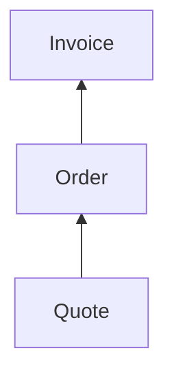

flowchart BT A[Quote] --> B[Order] --> C[Invoice]
Partly read line 1: RL is drawn as LR
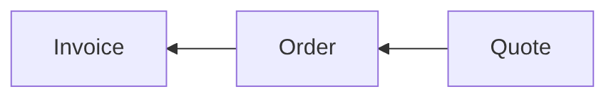

flowchart RL A[Quote] --> B[Order] --> C[Invoice]
Drawn, less something Mermaid's own settings are read past: the look is the design's
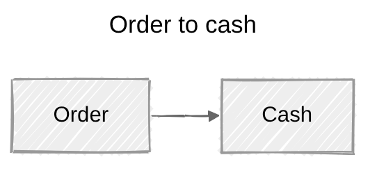
--- title: Order to cash config: look: handDrawn theme: neutral --- flowchart LR A[Order] --> B[Cash]
Drawn, less something Mermaid's own settings are read past: the look is the design's


%%{init: {"flowchart": {"curve": "basis"}, "theme": "forest"} }%%
flowchart LR
A[Order] --> B[Cash]
Drawn
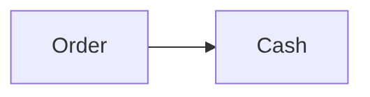

flowchart LR %% the happy path A[Order] --> B[Cash] %% and nothing else
Drawn

flowchart LR accTitle: Order to cash accDescr: An order becomes cash once it is paid A[Order] --> B[Cash]
Drawn

flowchart LR
accTitle: Order to cash
accDescr {
An order becomes cash
once it is paid
}
A[Order] --> B[Cash]
Drawn

flowchart LR; A[Order]-->B[Pick]; B-->C[Pack];C-->D[Ship];
Drawn
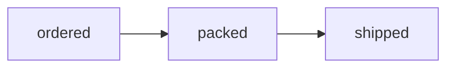

flowchart LR ordered --> packed --> shipped
Drawn
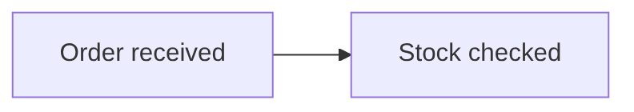

flowchart LR A[Order received] --> B[Stock checked]
Drawn


flowchart LR A["Commande reçue ❤"] --> B["在庫確認"]
Drawn

flowchart LR A["Total (net) & tax"] --> B["Is it > 100?"]
Drawn
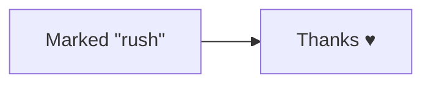
flowchart LR A["Marked #quot;rush#quot;"] --> B["Thanks #9829;"]
Drawn


flowchart LR A["Check stock<br/>in both warehouses"] --> B[Pick<br>and pack]
Drawn, less something Bold and italic are drawn as plain words
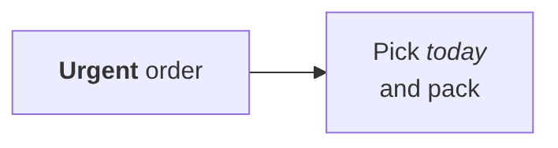
flowchart LR A["`**Urgent** order`"] --> B["`Pick *today* and pack`"]
Drawn, less something The icons are Merlive's own drawings of a truck and a tick, not Font Awesome's


flowchart LR A["fa:fa-truck Shipped"] --> B[fa:fa-check Delivered]
Drawn, less something Its corners are the design's, the same as every box

flowchart LR A[Before] --> B(Checked) --> C[After]
Drawn

flowchart LR A[Before] --> B([Start here]) --> C[After]
Drawn
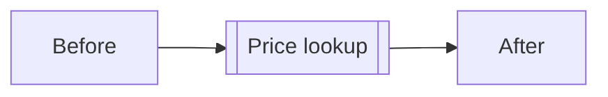
flowchart LR A[Before] --> B[[Price lookup]] --> C[After]
Drawn

flowchart LR A[Before] --> B[(Orders)] --> C[After]
Drawn, less something Drawn as a pill: a circle the height of a box would hold three letters
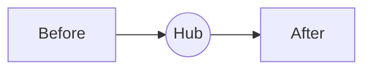

flowchart LR A[Before] --> B((Hub)) --> C[After]
Drawn
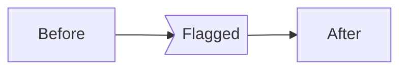
flowchart LR A[Before] --> B>Flagged] --> C[After]
Drawn


flowchart LR
A[Before] --> B{In stock?} --> C[After]
Drawn
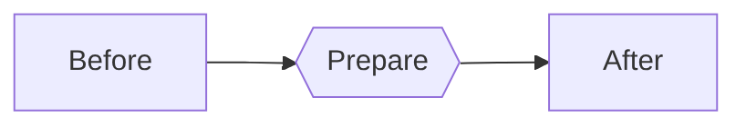

flowchart LR
A[Before] --> B{{Prepare}} --> C[After]
Drawn


flowchart LR A[Before] --> B[/Input/] --> C[After]
Drawn

flowchart LR A[Before] --> B[\Output\] --> C[After]
Drawn
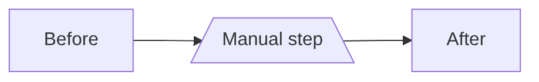
flowchart LR A[Before] --> B[/Manual step\] --> C[After]
Drawn


flowchart LR A[Before] --> B[\Priority/] --> C[After]
Drawn
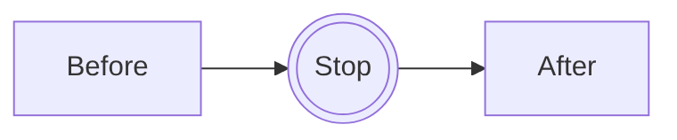

flowchart LR A[Before] --> B(((Stop))) --> C[After]
Drawn
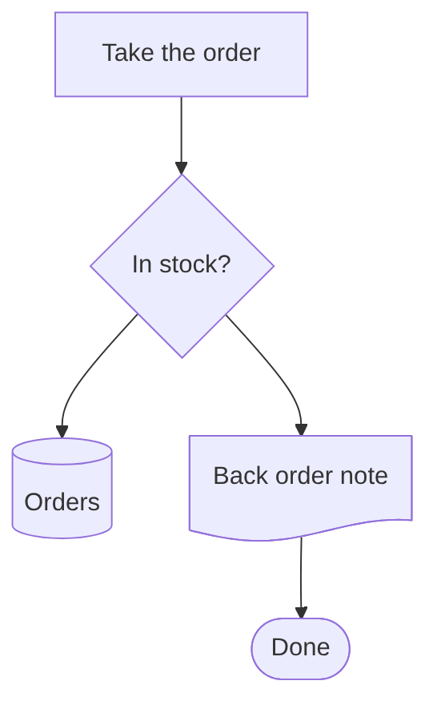

flowchart TD
A@{ shape: rect, label: "Take the order" } --> B@{ shape: diam, label: "In stock?" }
B --> C@{ shape: cyl, label: "Orders" }
B --> D@{ shape: doc, label: "Back order note" }
D --> E@{ shape: stadium, label: "Done" }
Drawn, less something Those Merlive has a drawing for are drawn as themselves; the rest are boxes
Mermaid could not draw this: Error: No such shape: browser.
flowchart TD
n0@{ shape: bang, label: "bang" }
n1@{ shape: browser, label: "browser" }
n2@{ shape: bucket, label: "bucket" }
n3@{ shape: notch-rect, label: "notch-rect" }
n4@{ shape: cloud, label: "cloud" }
n5@{ shape: hourglass, label: "hourglass" }
n6@{ shape: bolt, label: "bolt" }
n7@{ shape: brace, label: "brace" }
n8@{ shape: brace-r, label: "brace-r" }
n9@{ shape: braces, label: "braces" }
n10@{ shape: console, label: "console" }
n11@{ shape: lean-r, label: "lean-r" }
n12@{ shape: lean-l, label: "lean-l" }
n13@{ shape: datastore, label: "datastore" }
n14@{ shape: cyl, label: "cyl" }
n15@{ shape: diam, label: "diam" }
n16@{ shape: delay, label: "delay" }
n17@{ shape: h-cyl, label: "h-cyl" }
n18@{ shape: lin-cyl, label: "lin-cyl" }
n19@{ shape: curv-trap, label: "curv-trap" }
n20@{ shape: div-rect, label: "div-rect" }
n21@{ shape: doc, label: "doc" }
n22@{ shape: rounded, label: "rounded" }
n23@{ shape: tri, label: "tri" }
n24@{ shape: folder, label: "folder" }
n25@{ shape: fork, label: "fork" }
n26@{ shape: win-pane, label: "win-pane" }
n27@{ shape: f-circ, label: "f-circ" }
n28@{ shape: lin-doc, label: "lin-doc" }
n29@{ shape: lin-rect, label: "lin-rect" }
n30@{ shape: notch-pent, label: "notch-pent" }
n31@{ shape: flip-tri, label: "flip-tri" }
n32@{ shape: sl-rect, label: "sl-rect" }
n33@{ shape: trap-t, label: "trap-t" }
n34@{ shape: docs, label: "docs" }
n35@{ shape: st-rect, label: "st-rect" }
n36@{ shape: odd, label: "odd" }
n37@{ shape: flag, label: "flag" }
n38@{ shape: person, label: "person" }
n39@{ shape: hex, label: "hex" }
n40@{ shape: trap-b, label: "trap-b" }
n41@{ shape: rect, label: "rect" }
n42@{ shape: circle, label: "circle" }
n43@{ shape: sm-circ, label: "sm-circ" }
n44@{ shape: dbl-circ, label: "dbl-circ" }
n45@{ shape: fr-circ, label: "fr-circ" }
n46@{ shape: bow-rect, label: "bow-rect" }
n47@{ shape: fr-rect, label: "fr-rect" }
n48@{ shape: cross-circ, label: "cross-circ" }
n49@{ shape: tag-doc, label: "tag-doc" }
n50@{ shape: tag-rect, label: "tag-rect" }
n51@{ shape: stadium, label: "stadium" }
n52@{ shape: text, label: "text" }
n0 --> n9
n1 --> n10
n2 --> n11
n3 --> n12
n4 --> n13
n5 --> n14
n6 --> n15
n7 --> n16
n8 --> n17
n9 --> n18
n10 --> n19
n11 --> n20
n12 --> n21
n13 --> n22
n14 --> n23
n15 --> n24
n16 --> n25
n17 --> n26
n18 --> n27
n19 --> n28
n20 --> n29
n21 --> n30
n22 --> n31
n23 --> n32
n24 --> n33
n25 --> n34
n26 --> n35
n27 --> n36
n28 --> n37
n29 --> n38
n30 --> n39
n31 --> n40
n32 --> n41
n33 --> n42
n34 --> n43
n35 --> n44
n36 --> n45
n37 --> n46
n38 --> n47
n39 --> n48
n40 --> n49
n41 --> n50
n42 --> n51
n43 --> n52
Drawn, less something The icon is Merlive's own drawing of a user, beside the label and not above it
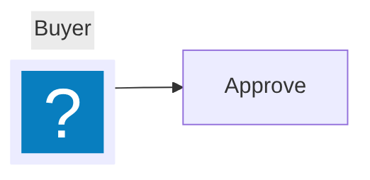
flowchart LR
A@{ icon: "fa:user", form: "square", label: "Buyer", pos: "t", h: 60 } --> B[Approve]
Drawn, less something The image is left out (a page of Merlive fetches nothing); its label is kept
Mermaid could not draw this: Failed to load resource: net::ERR_TUNNEL_CONNECTION_FAILED

flowchart LR
A@{ img: "https://example.com/logo.svg", label: "Supplier", pos: "t", w: 60, h: 60, constraint: "on" } --> B[Order]
Drawn, less something The rows and columns are read past: placement is Merlive's


flowchart TB
A[Quote]@{ row: 1, column: 1 } --> B[Order]@{ row: 1, column: 2 }
B --> C[Invoice]@{ row: 2, column: 2 }
Drawn
flowchart LR A[Order] --> B[Pick]
Drawn

flowchart LR A[Order] --- B[Pick]
Drawn
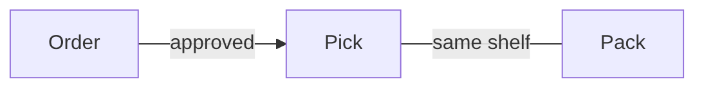

flowchart LR A[Order] -->|approved| B[Pick] B ---|same shelf| C[Pack]
Drawn

flowchart LR A[Order] -- approved --> B[Pick] B -- same shelf --- C[Pack] C -- "signed for" --> D[Ship]
Drawn
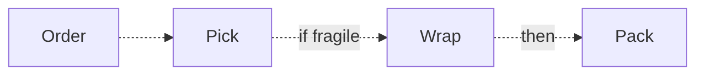
flowchart LR A[Order] -.-> B[Pick] B -. if fragile .-> C[Wrap] C -.->|then| D[Pack]
Drawn

flowchart LR A[Order] ==> B[Pick] B == must ==> C[Pack] C ==>|always| D[Ship]
Drawn, less something Its boxes are read and the link is left out: it is only there to nudge Mermaid's placement, and placement is Merlive's
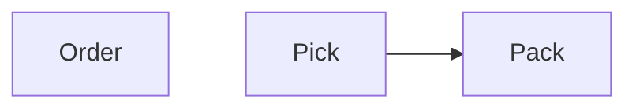

flowchart LR A[Order] ~~~ B[Pick] B --> C[Pack]
Drawn


flowchart LR A[Order] --> B[Pick] --> C[Pack] --> D[Ship]
Drawn
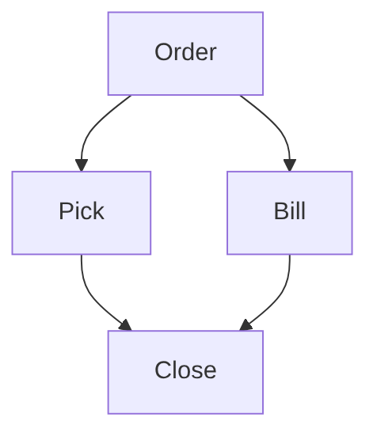

flowchart TB A[Order] --> B[Pick] & C[Bill] --> D[Close]
Drawn

flowchart TB A[Web order] & B[Phone order] --> C[Pick] & D[Bill]
Drawn


flowchart LR A[Order] --o B[Line items] B --x C[Cancelled]
Drawn
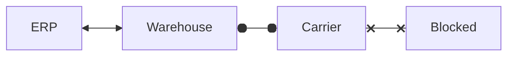
flowchart LR A[ERP] <--> B[Warehouse] B o--o C[Carrier] C x--x D[Blocked]
Drawn, less something The extra length is read past: placement is Merlive's
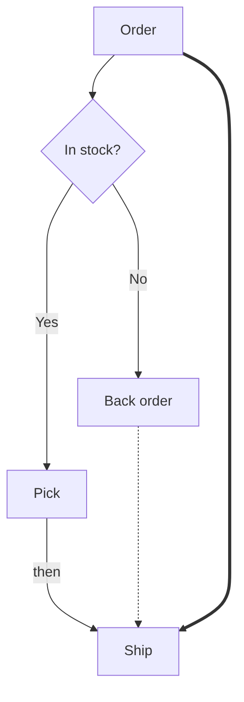

flowchart TD
A[Order] --> B{In stock?}
B -->|Yes| C[Pick]
B ---->|No| D[Back order]
C -- then ---> E[Ship]
D -...-> E
A ====> E
Drawn
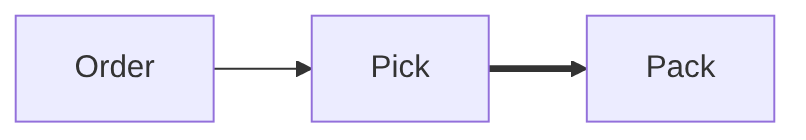

flowchart LR A[Order] e1@--> B[Pick] B e2@==> C[Pack]
Drawn, less something Mermaid's animation is read past: movement is the design's, and starts when a reader asks


flowchart LR
A[Order] e1@--> B[Pick]
B e2@--> C[Pack]
e1@{ animate: true }
e2@{ animation: fast }
Drawn, less something The step numbers are read past; a walkthrough is written with "%% step"
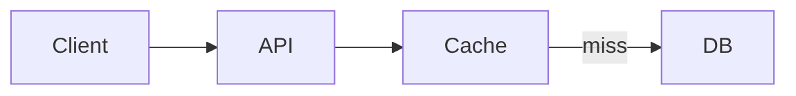
flowchart LR
Client e1@--> API
API e2@--> Cache
Cache e3@-->|miss| DB
e1@{ step: 1 }
e2@{ step: 2 }
e3@{ step: 3 }
Drawn, less something The curve is read past: lines turn at right angles by rule
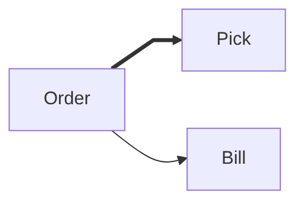
flowchart LR
A[Order] e1@==> B[Pick]
A e2@--> C[Bill]
e1@{ curve: linear }
e2@{ curve: natural }
Drawn
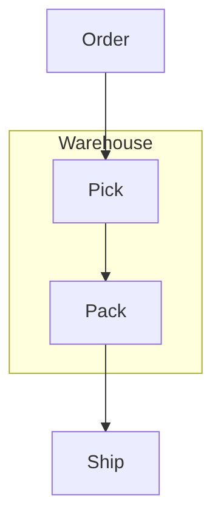
flowchart TB
A[Order] --> B[Pick]
subgraph Warehouse
B --> C[Pack]
end
C --> D[Ship]
Drawn


flowchart TB
A[Order] --> B[Pick]
subgraph wh ["The warehouse"]
B --> C[Pack]
end
C --> D[Ship]
Drawn


flowchart TB
subgraph buy [Buying]
A[Quote] --> B[Order]
end
subgraph pay [Paying]
C[Invoice] --> D[Payment]
end
buy --> pay
D --> E[Close]
Drawn, less something The group's own direction is read past; it runs the way the rest does


flowchart TB
A[Order] --> B
subgraph wh [Warehouse]
direction LR
B[Pick] --> C[Pack] --> D[Label]
end
D --> E[Ship]
Partly read read 1 of 2 groups; line 4: a group inside a group is drawn as part of the outer one


flowchart TB
subgraph site [Site]
A[Receive]
subgraph wh [Warehouse]
B[Pick] --> C[Pack]
end
A --> B
end
C --> D[Ship]
Drawn, less something Drawn open: a picture cannot be opened and closed
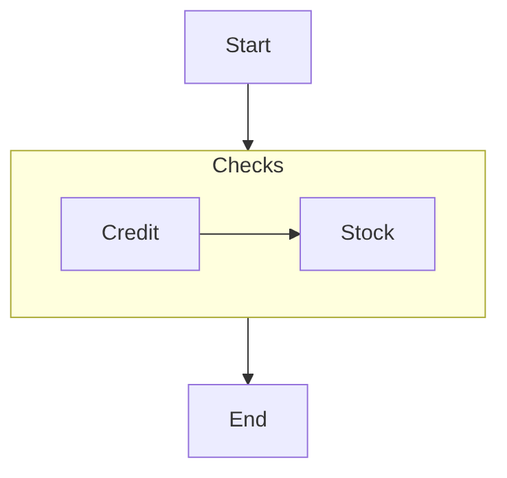

flowchart TD
Start --> one
subgraph one [Checks]
A[Credit] --> B[Stock]
end
one --> End
one@{ view: collapsed }
Drawn, less something Its outline is broken, heavy and red as written, in the design's own red; its fill is the design's

flowchart LR A[Order] --> B[On hold] style B fill:#fde,stroke:#c00,stroke-width:3px,stroke-dasharray: 5 5
Drawn, less something The link is heavy and red as written, in the design's own red; a default for every link is read past
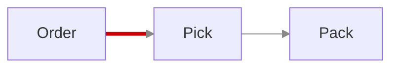

flowchart LR A[Order] --> B[Pick] --> C[Pack] linkStyle 0 stroke:#c00,stroke-width:4px linkStyle default stroke:#888
Drawn

flowchart LR A[Order] --> B[On hold] --> C[Cancelled] classDef stopped stroke:#c62828,stroke-width:2px class B,C stopped
Drawn
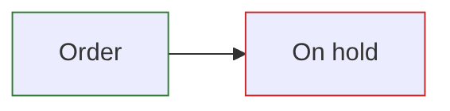

flowchart LR A[Order]:::fresh --> B[On hold]:::stopped classDef fresh stroke:#2e7d32 classDef stopped stroke:#c62828
Drawn, less something The default class is read past: the look is the design's
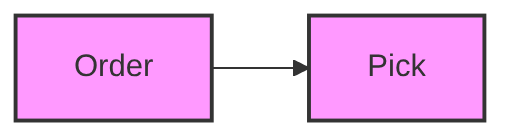
flowchart LR A[Order] --> B[Pick] classDef default fill:#f9f,stroke:#333,stroke-width:2px
Drawn, less something The click is left out: a page of Merlive runs no code of yours

flowchart LR A[Order] --> B[Pick] click A callback "Open the order" click B call showPick() "Show the pick list"
Drawn, less something The link is left out
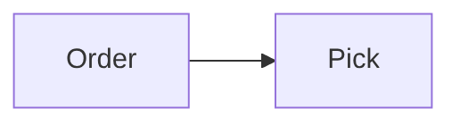

flowchart LR A[Order] --> B[Pick] click A "https://example.com/orders" "Open the order" _blank click B href "https://example.com/picks"
Left as Mermaid

Not drawn: a sequenceDiagram is not drawn yet
sequenceDiagram participant B as Buyer participant E as ERP participant S as Supplier B->>E: Raise order E->>S: Send order S-->>E: Confirm E-->>B: Order confirmed
Left as Mermaid
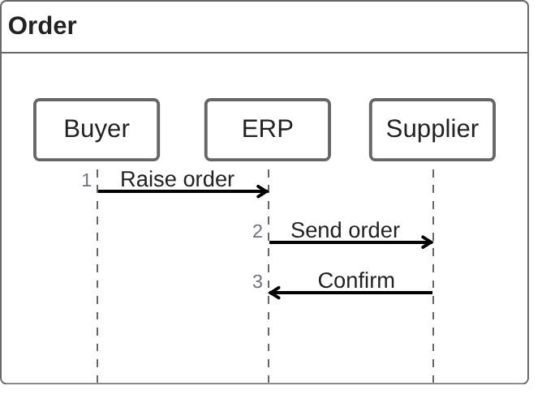
Not drawn: a zenuml is not drawn yet
zenuml title Order Buyer->ERP: Raise order ERP->Supplier: Send order Supplier->ERP: Confirm
Left as Mermaid
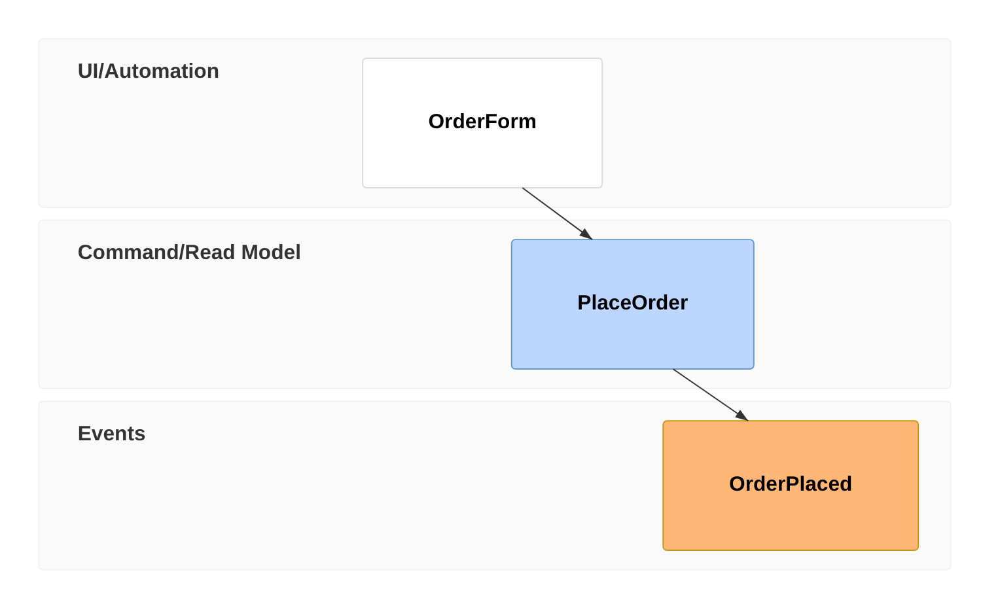
Not drawn: a eventmodeling is not drawn yet
eventmodeling tf 01 ui OrderForm tf 02 cmd PlaceOrder tf 03 evt OrderPlaced
Left as Mermaid
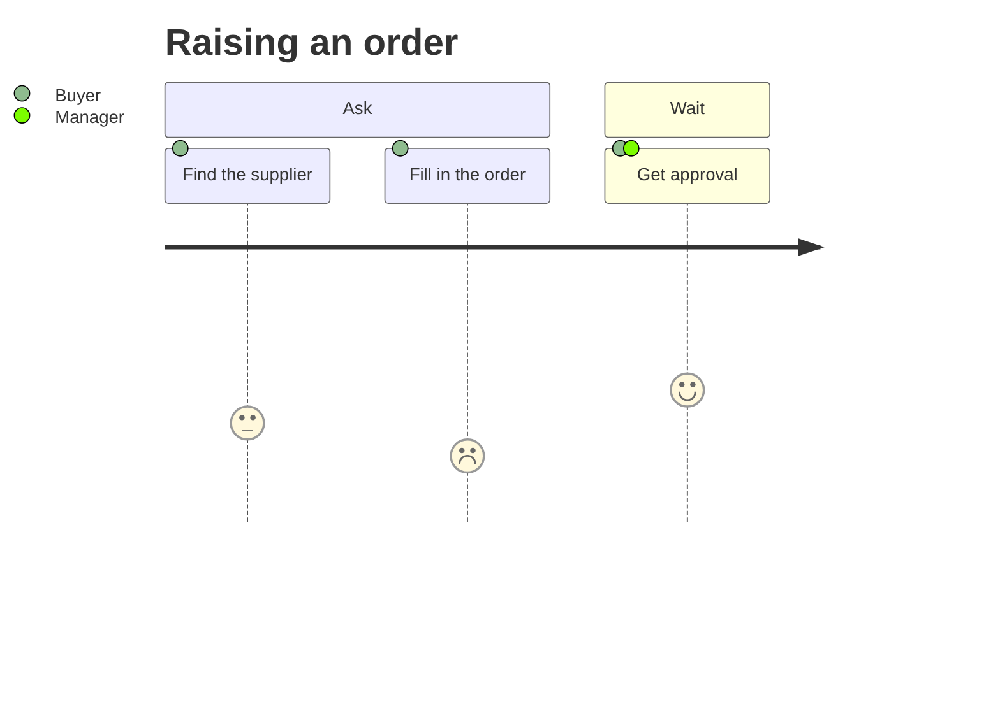
Not drawn: a journey is not drawn yet
journey
title Raising an order
section Ask
Find the supplier: 3: Buyer
Fill in the order: 2: Buyer
section Wait
Get approval: 4: Buyer, Manager
Left as Mermaid

Not drawn: a timeline is not drawn yet
timeline title The order's week Monday : Raised Tuesday : Approved : Sent Friday : Delivered
Left as Mermaid
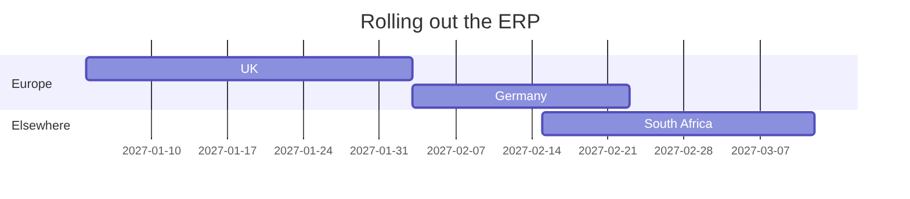
Not drawn: a gantt is not drawn yet
gantt
title Rolling out the ERP
dateFormat YYYY-MM-DD
section Europe
UK :a1, 2027-01-04, 30d
Germany :after a1, 20d
section Elsewhere
South Africa :2027-02-15, 25d
Left as Mermaid
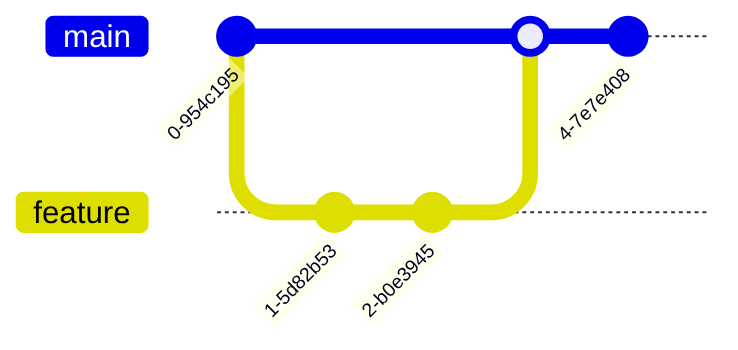
Not drawn: a gitGraph is not drawn yet
gitGraph commit branch feature checkout feature commit commit checkout main merge feature commit
Left as Mermaid
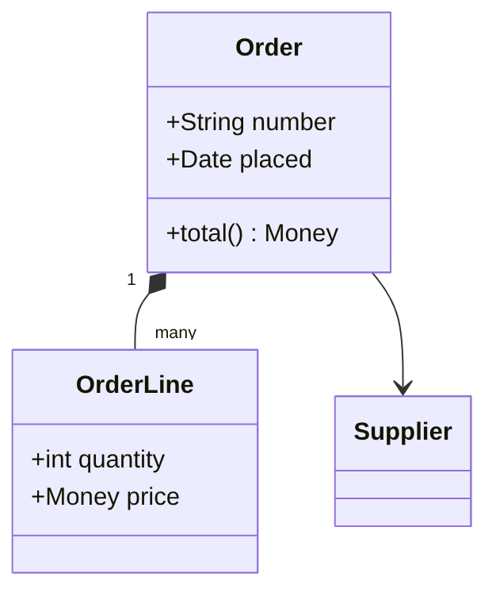
Not drawn: a classDiagram is not drawn yet
classDiagram
class Order {
+String number
+Date placed
+total() Money
}
class OrderLine {
+int quantity
+Money price
}
Order "1" *-- "many" OrderLine
Order --> Supplier
Left as Mermaid
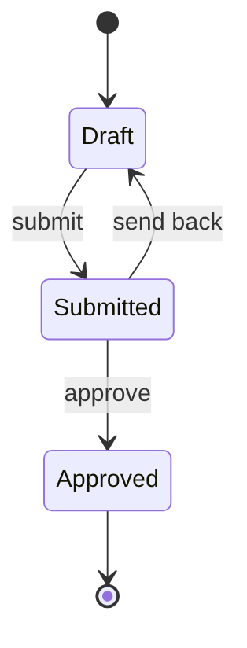
Not drawn: a stateDiagram-v2 is not drawn yet
stateDiagram-v2 [*] --> Draft Draft --> Submitted: submit Submitted --> Approved: approve Submitted --> Draft: send back Approved --> [*]
Left as Mermaid

Not drawn: a erDiagram is not drawn yet
erDiagram
SUPPLIER ||--o{ ORDER : receives
ORDER ||--|{ ORDER_LINE : contains
PRODUCT ||--o{ ORDER_LINE : "is on"
Left as Mermaid

Not drawn: a requirementDiagram is not drawn yet
requirementDiagram
requirement approval {
id: 1
text: Orders over the limit are approved by a manager.
risk: high
verifymethod: test
}
element approval_flow {
type: workflow
}
approval_flow - satisfies -> approval
Left as Mermaid
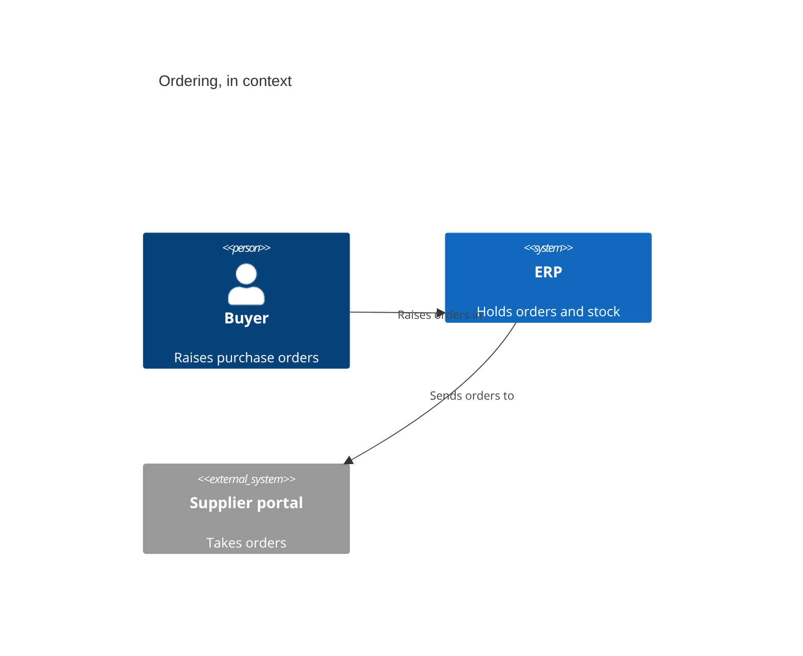
Not drawn: a C4Context is not drawn yet
C4Context title Ordering, in context Person(buyer, "Buyer", "Raises purchase orders") System(erp, "ERP", "Holds orders and stock") System_Ext(sup, "Supplier portal", "Takes orders") Rel(buyer, erp, "Raises orders in") Rel(erp, sup, "Sends orders to")
Left as Mermaid

Not drawn: a block is not drawn yet
block columns 3 web["Web shop"] space erp["ERP"] space:3 wh["Warehouse"]:3 web --> erp erp --> wh
Left as Mermaid
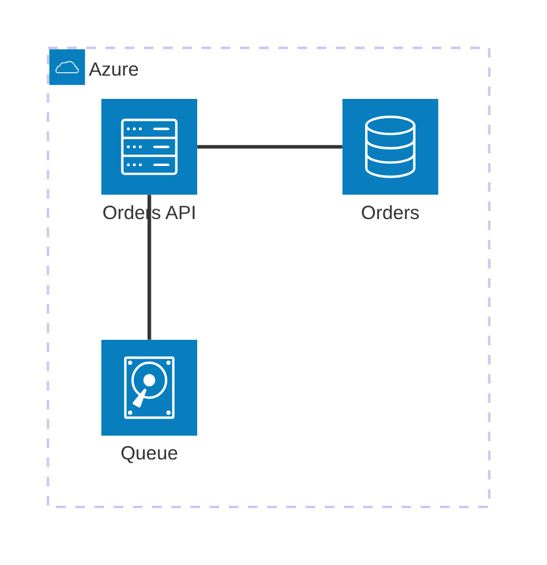
Not drawn: a architecture-beta is not drawn yet
architecture-beta group cloud(cloud)[Azure] service api(server)[Orders API] in cloud service db(database)[Orders] in cloud service queue(disk)[Queue] in cloud api:R -- L:db api:B -- T:queue
Left as Mermaid
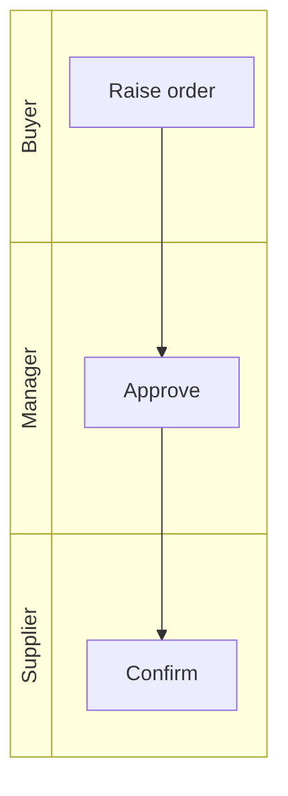
Not drawn: a swimlane-beta is not drawn yet
swimlane-beta LR
subgraph Buyer
Raise[Raise order]
end
subgraph Manager
Approve[Approve]
end
subgraph Supplier
Confirm[Confirm]
end
Raise --> Approve --> Confirm
Left as Mermaid
Mermaid could not draw this: UnknownDiagramError: No diagram type detected matching given configuration
Not drawn: a usecase-beta is not drawn yet
usecase-beta
direction LR
actor Buyer("Buyer")
systemBoundary "Ordering"
Raise("Raise an order")
end
Buyer --> Raise
Left as Mermaid
Mermaid could not draw this: UnknownDiagramError: No diagram type detected matching given configuration
Not drawn: a agentflow-beta is not drawn yet
agentflow-beta TB
flow buyer["Order agent"]
read["Read the request"]@{ shape: input }
check["check_stock"]@{ shape: tool }
ok["In stock?"]@{ shape: decision }
read --> check --> ok
end
Left as Mermaid

Not drawn: a mindmap is not drawn yet
mindmap
root((Ordering))
Buying
Quotes
Orders
Paying
Invoices
Payments
Left as Mermaid
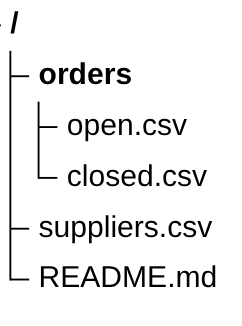
Not drawn: a treeView-beta is not drawn yet
treeView-beta ├── orders/ │ ├── open.csv │ └── closed.csv ├── suppliers.csv └── README.md
Left as Mermaid
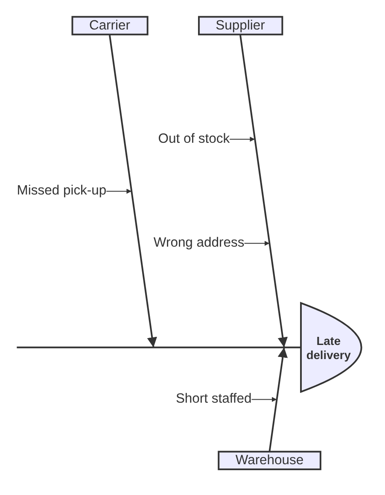
Not drawn: a ishikawa-beta is not drawn yet
ishikawa-beta
Late delivery
Supplier
Out of stock
Wrong address
Warehouse
Short staffed
Carrier
Missed pick-up
Left as Mermaid

Not drawn: a kanban is not drawn yet
kanban
todo[To do]
t1[Raise the order]
doing[Doing]
t2[Chase the supplier]
done[Done]
t3[Pay the invoice]
Left as Mermaid
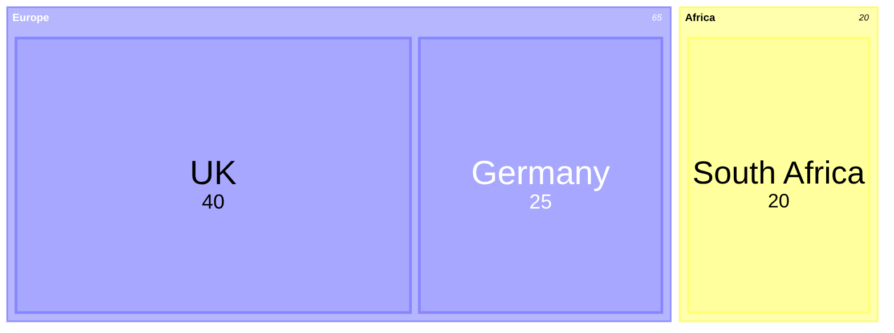
Not drawn: a treemap-beta is not drawn yet
treemap-beta
"Europe"
"UK": 40
"Germany": 25
"Africa"
"South Africa": 20
Left as Mermaid
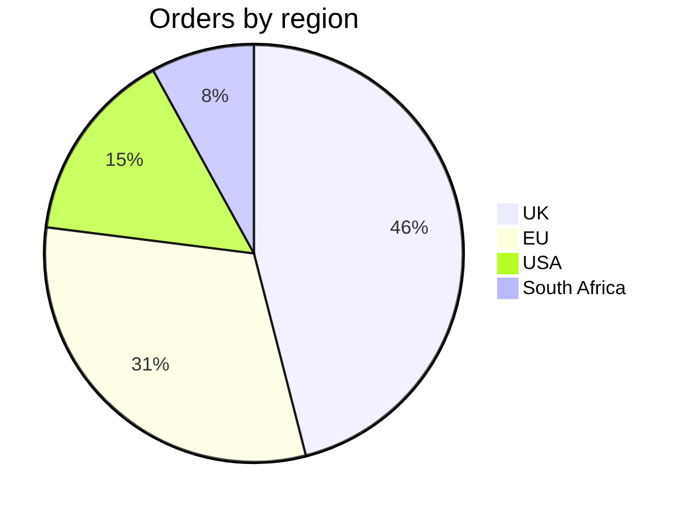
Not drawn: a pie is not drawn yet
pie title Orders by region "UK" : 46 "EU" : 31 "USA" : 15 "South Africa" : 8
Left as Mermaid

Not drawn: a quadrantChart is not drawn yet
quadrantChart title Suppliers by price and speed x-axis Slow --> Fast y-axis Dear --> Cheap quadrant-1 Keep quadrant-2 Speed up quadrant-3 Replace quadrant-4 Negotiate Acme: [0.8, 0.7] Bolt: [0.3, 0.6] Cord: [0.6, 0.2]
Left as Mermaid
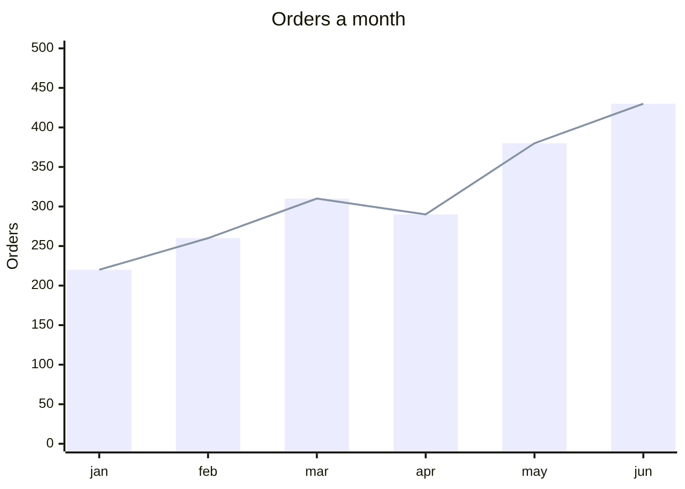
Not drawn: a xychart is not drawn yet
xychart title "Orders a month" x-axis [jan, feb, mar, apr, may, jun] y-axis "Orders" 0 --> 500 bar [220, 260, 310, 290, 380, 430] line [220, 260, 310, 290, 380, 430]
Left as Mermaid

Not drawn: a sankey is not drawn yet
sankey Orders,Approved,80 Orders,Sent back,20 Approved,Delivered,74 Approved,Cancelled,6
Left as Mermaid

Not drawn: a radar-beta is not drawn yet
radar-beta
axis p["Price"], s["Speed"], q["Quality"], r["Range"]
curve a["Acme"]{70, 90, 80, 60}
curve b["Bolt"]{90, 50, 70, 80}
max 100
min 0
Left as Mermaid

Not drawn: a packet is not drawn yet
packet 0-15: "Order number" 16-23: "Lines" 24-31: "Status" 32-63: "Total, in pence"
Left as Mermaid
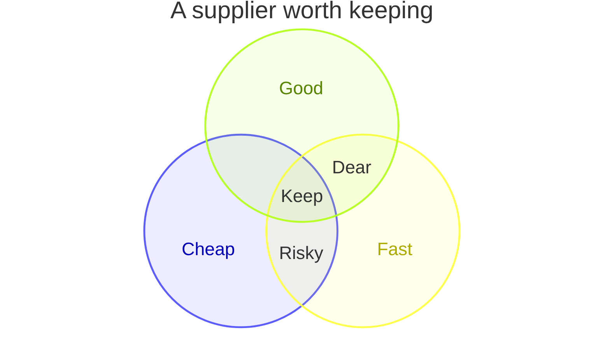
Not drawn: a venn-beta is not drawn yet
venn-beta title A supplier worth keeping set Cheap set Fast set Good union Cheap,Fast["Risky"] union Fast,Good["Dear"] union Cheap,Fast,Good["Keep"]
Left as Mermaid
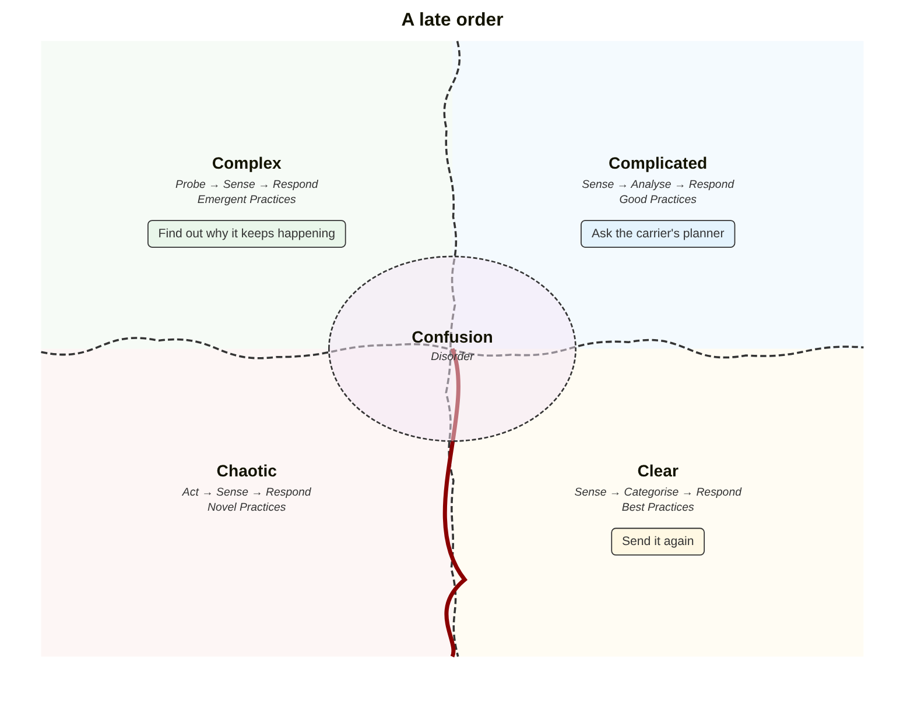
Not drawn: a cynefin-beta is not drawn yet
cynefin-beta
title A late order
complex
"Find out why it keeps happening"
complicated
"Ask the carrier's planner"
clear
"Send it again"
Left as Mermaid

Not drawn: a wardley-beta is not drawn yet
wardley-beta title Ordering anchor Buyer [0.95, 0.63] component Order [0.79, 0.61] component ERP [0.52, 0.80] component Hosting [0.10, 0.90] Buyer -> Order Order -> ERP ERP -> Hosting
Left as Mermaid
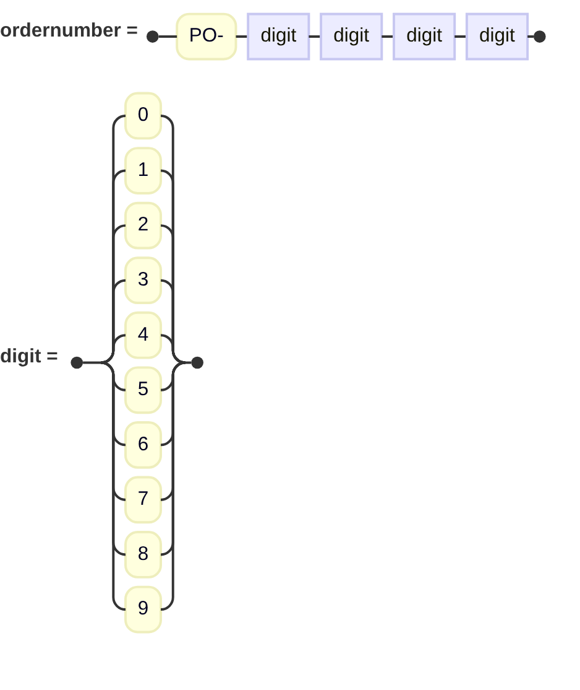
Not drawn: a railroad-ebnf-beta is not drawn yet
railroad-ebnf-beta title "Order number" ordernumber = "PO-" digit digit digit digit ; digit = "0" | "1" | "2" | "3" | "4" | "5" | "6" | "7" | "8" | "9" ;